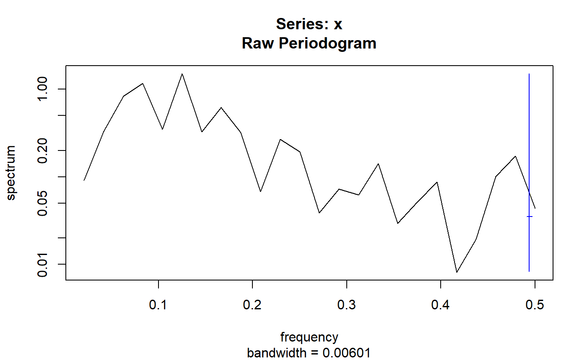
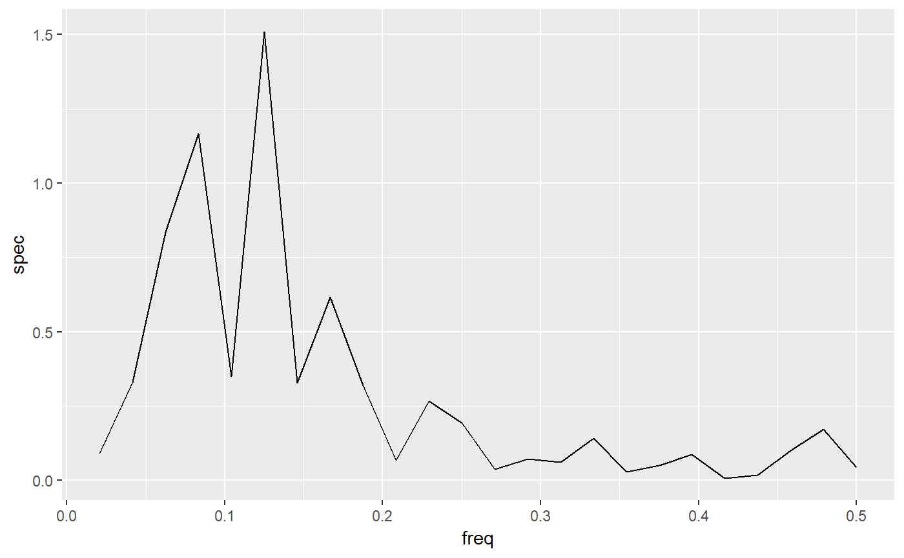

Given a "spec" object, which shows a spectrum across a range of frequencies, returns a tidy data frame with two columns: "freq" and "spec"
# S3 method for spec tidy(x, ...)
| x | an object of class "spec" |
|---|---|
| ... | extra arguments (not used) |
a data frame with "freq" and "spec" columns
spc <- spectrum(lh)tidy(spc)#> freq spec #> 1 0.02083333 0.091189851 #> 2 0.04166667 0.331409714 #> 3 0.06250000 0.836163368 #> 4 0.08333333 1.167519168 #> 5 0.10416667 0.350326115 #> 6 0.12500000 1.510068104 #> 7 0.14583333 0.327650442 #> 8 0.16666667 0.617605221 #> 9 0.18750000 0.319521754 #> 10 0.20833333 0.067483763 #> 11 0.22916667 0.267266157 #> 12 0.25000000 0.193002844 #> 13 0.27083333 0.038723050 #> 14 0.29166667 0.072054409 #> 15 0.31250000 0.062259382 #> 16 0.33333333 0.142116969 #> 17 0.35416667 0.029340861 #> 18 0.37500000 0.051686890 #> 19 0.39583333 0.087081234 #> 20 0.41666667 0.008120985 #> 21 0.43750000 0.019349272 #> 22 0.45833333 0.100881666 #> 23 0.47916667 0.172578174 #> 24 0.50000000 0.043702012